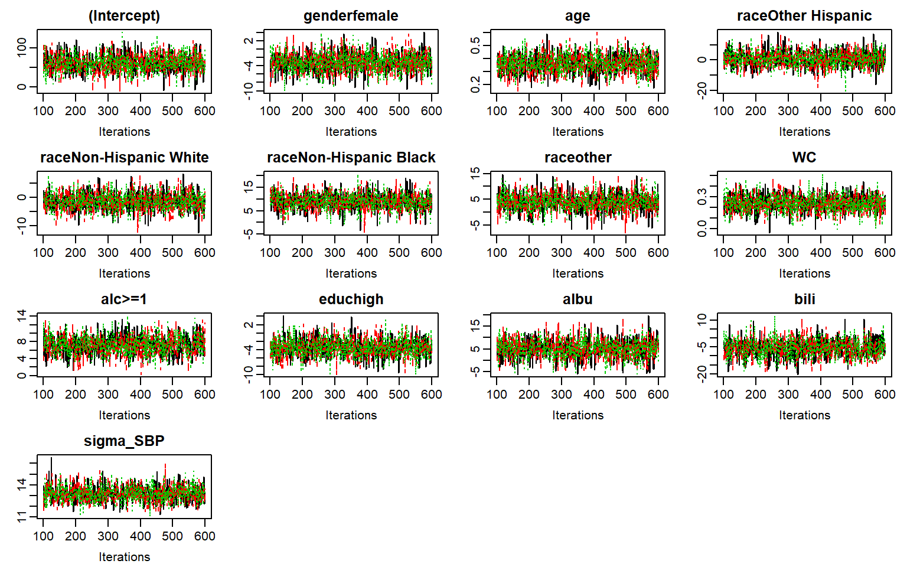
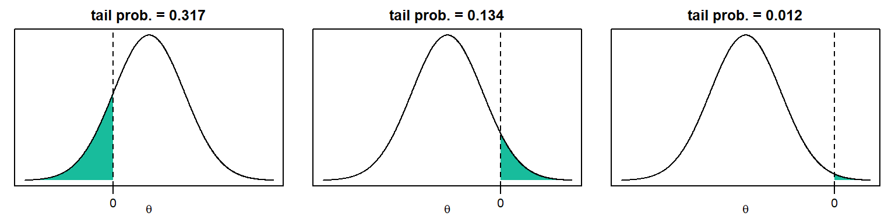
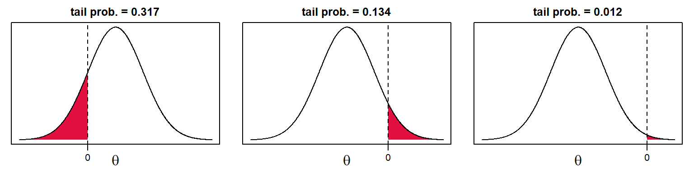

In this vignette, we use the NHANES data that are part of the JointAI package. For more info on this data, check the help file for the NHANES data, go to the web page of the National Health and Nutrition Examination Survey (NHANES) and check out the vignette Visualizing Incomplete Data, in which the NHANES data is explored.
Fitting a linear regression model with JointAI is straightforward with the function lm_imp():
lm1 <- lm_imp(SBP ~ gender + age + race + WC + alc + educ + albu + bili,
data = NHANES, n.iter = 500, progress.bar = 'none')The specification of lm_imp() is similar to the specification of a linear regression model for complete data using lm().1 In this minimal example the only difference is that for lm_imp() the number of iterations n.iter has to be specified. Of course there are many more parameters that can or should be specified. In the vignette Model Specification many of these parameters are explained in detail.
n.iter specifies the length of the Markov Chain, i.e., the number of draws from the posterior distribution of the parameter or unobserved value. How many iterations are necessary depends on the data and complexity of the model and can vary from as few as 100 up to thousands or millions.
One important criterion is that the Markov chains need to have converged. This can be evaluated visually with a traceplot.

The function traceplot() produces a plot of the sampled values across iterations per parameter. By default, three2 Markov chains are produced for each parameter and represented by different colors.
When the sampler has converged the chains show a horizontal band, as in the above figure. Consequently, when traces show a trend, convergence has not been reached and more iterations are necessary (e.g., using add_samples()).
When convergence has been achieved, we can obtain the result of the model from the model summary.
Results from a JointAI model can be printed using
summary(lm1)
#>
#> Linear model fitted with JointAI
#>
#> Call:
#> lm_imp(formula = SBP ~ gender + age + race + WC + alc + educ +
#> albu + bili, data = NHANES, n.iter = 500, progress.bar = "none")
#>
#> Posterior summary:
#> Mean SD 2.5% 97.5% tail-prob.
#> (Intercept) 61.2211 22.98157 16.33029 105.6718 0.010667
#> genderfemale -3.0985 2.24708 -7.66491 1.2410 0.165333
#> age 0.3667 0.07236 0.22060 0.5115 0.000000
#> raceOther Hispanic 0.5344 4.99431 -8.90013 9.9542 0.922667
#> raceNon-Hispanic White -1.4764 3.04979 -7.42185 4.6651 0.614667
#> raceNon-Hispanic Black 8.8747 3.47454 1.88633 15.7955 0.012000
#> raceother 3.7820 3.44227 -2.90495 10.5192 0.262667
#> educhigh -3.5264 2.19017 -7.75132 0.8134 0.102667
#> WC 0.2392 0.08204 0.07239 0.4038 0.002667
#> albu 5.1999 4.10335 -2.73428 13.5033 0.205333
#> bili -5.6843 4.96464 -15.91627 3.6292 0.254667
#> alc>=1 7.2288 2.23494 2.87646 11.5847 0.000000
#>
#> Posterior summary of residual std. deviation:
#> Mean SD 2.5% 97.5%
#> sigma_SBP 13.17 0.7198 11.88 14.67
#>
#>
#> MCMC settings:
#> Iterations = 101:600
#> Sample size per chain = 500
#> Thinning interval = 1
#> Number of chains = 3
#>
#> Number of observations: 186The output gives the posterior summary, i.e., the summary of the MCMC (Markov Chain Monte Carlo) sample (which consists of all Markov chains combined).
By default, summary() will only print the posterior summary for the main model parameters of the analysis model. How to select which parameters are shown is described in the vignette Selecting Parameters.
The summary consists of the posterior mean, the standard deviation and the 2.5% and 97.5% quantiles of the MCMC sample, and the tail probability. The tail probability is a measure of how likely the value 0 is under the estimated posterior distribution, and is calculated as \[2\times\min\left\{Pr(\theta > 0), Pr(\theta < 0)\right\}\] (where \(\theta\) is the parameter of interest).
In the following graphics, the shaded areas represent the minimum of \(Pr(\theta > 0)\) and \(Pr(\theta < 0)\): 
Additionally, some important characteristics of the MCMC samples on which the summary is based, is given. This includes the range and number of iterations (= Sample size per chain), thinning interval and number of chains.
Furthermore, the number of observations (the sample size of the data) is given.
With the arguments start, end and thin it is possible to select which iterations from the MCMC sample are included in the summary.
For example:
When the traceplot shows that the chains only converged after 1500 iterations, start = 1500 should be specified in summary().
The posterior distributions can be visualized using the function densplot():

By default, densplot() plots the empirical distribution of each of the chains separately. When joined = TRUE the distributions of the combined chains are plotted.